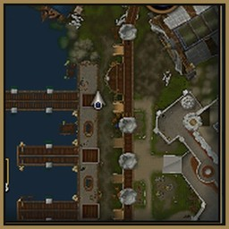

Minimap · WoW: Forever
Deno Square Minimap
Makes the minimap square, with a thin border instead of the round frame.
What it does
Pictures

Install
- Download the zip from the latest release, or install it from CurseForge.
- Extract the
DenoSquareMinimapfolder intoWorld of Warcraft\<Forever folder>\Interface\AddOns\. - Restart the game.